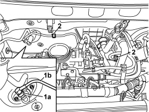
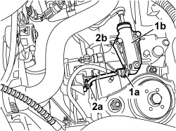

1820B45 RIGID DELIVERY PIPE FROM MASTER CYLINDER (PUMP) - R R FOR RHD VER SIONS
- Path
- Procedures > 18 CLUTCH UNIT > 1820 CLUTCH RELEASE CONTROLS > 1820B HYDRAULIC CLUTCH SYSTEM > 1820B45 RIGID DELIVERY PIPE FROM MASTER CYLINDER (PUMP) - R R FOR RHD VER SIONS
- Kind
- repair procedure (removal / refitting; the operation number is the code)
- Applies to
- engines: 1.2 8v; all production periods; only with equipment: Right hand drive
- Interactive page
- https://sloeber94.github.io/elrnDB-fPnd/en/#/169002209
Applies to: engines: 1.2 8v; all production periods
 Removing
Removing
 Refitting
RefittingOp. 5530B56 BATTERY DRIP TRAY COVER - R.R.
Disconnect the negative battery terminal.
Description | Connector | |
|---|---|---|
- | Battery | A001 |
Op. 5530B52 BATTERY CRADLE - R R
1. Lift up the retaining clip (1a) and disconnect the pipe (1b) from the master cylinder to the slave cylinder, master cylinder side.
2. Undo the clips retaining the pipe to the body.

Applies to: engines: 1.2 8v; all production periods; only with equipment: Right hand drive
1. Raise clip (1a) securing the pipe to the slave cylinder (1b).
2. Undo retaining collar (2a), then remove rigid pipe (2b) from the pump master cylinder.

Applies to: engines: 1.2 8v; all production periods
Refitting
RemovingPosition the pipe from the pump master cylinder in its seat and do up the clips retaining it to the body.
Connect the pipe to the pump master cylinder and the clutch slave cylinder, then insert the retaining clips.
Op. 5530B52 BATTERY CRADLE - R R
Connect the negative battery terminal.
Description | Connector | |
|---|---|---|
- | Battery | A001 |
Op. 5530B56 BATTERY DRIP TRAY COVER - R.R.
Op. 0010T64 BRAKE AND OR CLUTCH FLUID CHECK LEVEL AND TOP UP AS NECESSARY